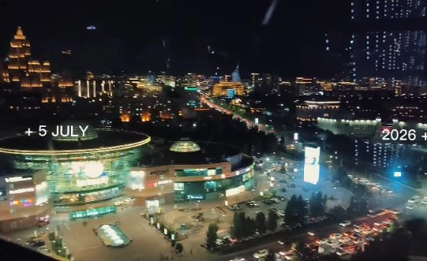
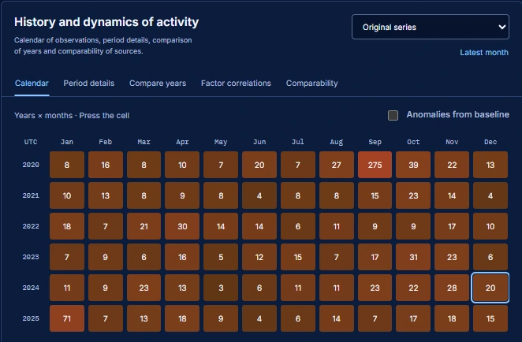

Destiny Matrix Lab / YouTube
Autumn
relax
Вечернее кафе в тёплом свете на фоне холодного города. На своём канале я выпускаю атмосферные и объясняющие видео. При создании роликов использую Claude.
Открыть каналИзбранные работы / SOUL CAMP Film
Видео, интерфейсы
и графический дизайн

Атмосферные видео, городские планы и объясняющая графика.
Destiny Matrix Lab / YouTube
Вечернее кафе в тёплом свете на фоне холодного города. На своём канале я выпускаю атмосферные и объясняющие видео. При создании роликов использую Claude.
Открыть канал

Instagram Reel / 32 сек.
Дневные улицы, архитектура и вечерние огни в короткой городской зарисовке.
Съёмка и монтаж — Оксана Леонтьева

Destiny Matrix Lab / YouTube
Обложка и графика ролика. Цветовые акценты помогают выделить нужный узел схемы.
Приложение для часов, геоаналитика и университетские веб-макеты.
Приложение для смарт-часов
Два экрана приложения. Обзор группирует показатели рядом с данными об активности, а отдельный график позволяет переключать интервалы истории.
Показания и данные датчика скрыты.


ГИС-платформа / командный проект
Карта происшествий с фильтрами и обзорная панель для сравнения показателей аварийности. Моя роль — фронтенд и анализ данных.
На экранах учебные данные.


Kozybayev University / веб-макеты
Главная знакомит с университетскими ИИ-агентами. В новостном разделе события собраны в сетку карточек.


NASA Space Apps / командный проект KU-group
Календарь помогает выбрать месяц наблюдений, а спутниковая карта показывает, где была зафиксирована пожарная активность.


Плакаты, карточки для соцсетей и материалы для университета.


Один образ горы в двух форматах плаката.


Обложка, тарифы и правила безопасности.


Информационные материалы для KU ML School и Центра искусственного интеллекта.
Я Оксана Леонтьева, разработчик ПО и бизнес-аналитик. Работаю с веб- и мобильными интерфейсами, веду YouTube-канал и экспериментирую с раскадровкой и сборкой коротких видео.